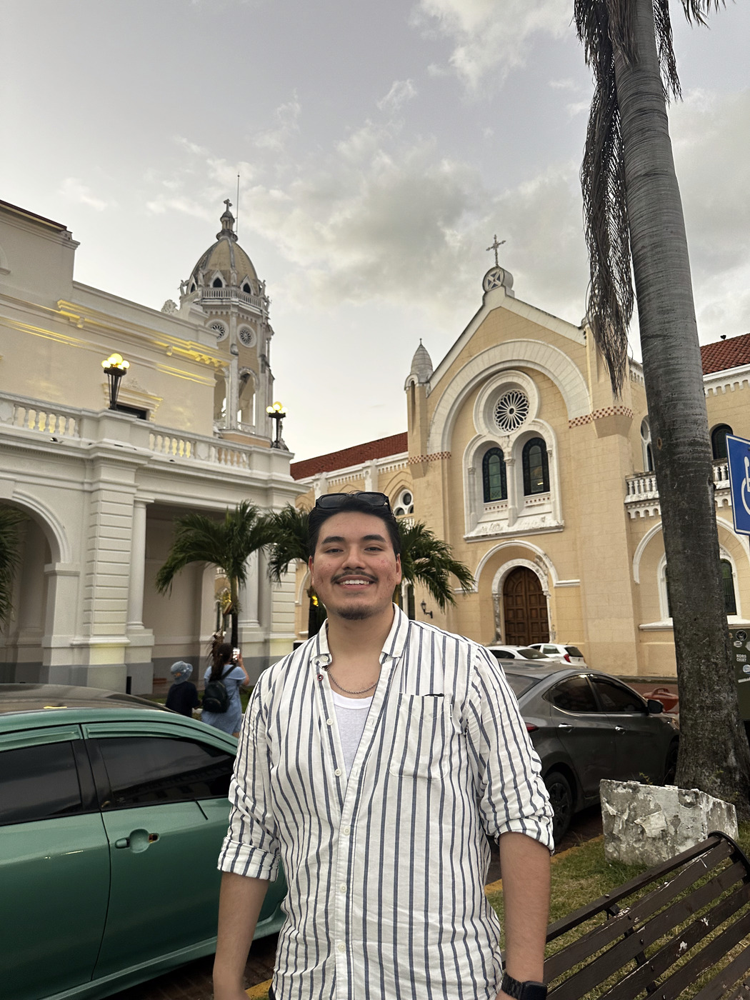
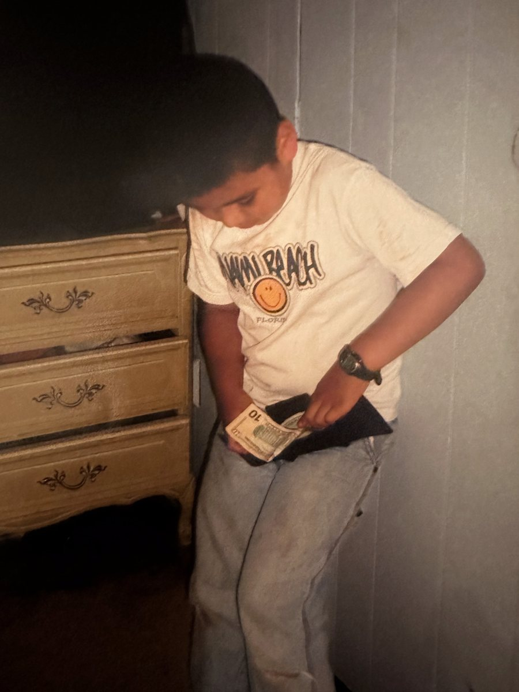

Builder, seller, operator, born in New York City, first in my family to graduate college. I grew up around people who built things with their hands, and I learned early that nobody hands you anything. You go earn it.


From a young age I had real exposure to hard work, doing manual labor alongside my dad and my mom. I was not forced into it. Being around it early is what taught me the value of money and the value of family, and what it actually takes to earn a dollar when you do not have the tools or the capital to start the kind of business other people get to start.
That is an immigrant mentality. My parents built what they could with their hands, and I helped however I could. I translated and negotiated for them from a young age, even when I did not understand every part of the process. I only knew English from school, which is a very different thing from knowing how to talk to people out in the real world, so I learned that on the fly, in situations that actually mattered.
I have been doing hard work since I was young, and I kept doing it all the way through NYU Stern, where I earned a BS in Business and became the first in my family to graduate college. That is where my work ethic comes from, and it is why I do not wait around for anyone to hand me anything.
Today I am a Sales Development Representative at an AI platform for commercial real estate, where I run high volume outbound to brokers, sponsors, and operators and generate pipeline end to end. Before that I was a full cycle SMB account executive at an AI marketing SaaS, closing my own deals from day one.
What sets me apart is that I do not just run the sales process, I build it. I have shipped real software on the Claude API, Vercel, and Supabase, including an SDR performance tracker, a lead engine that prospects on its own, and tools for the family businesses I grew up in. I am a salesperson who can actually build, and a builder who knows how to sell.
I build software on the side because I cannot stop thinking about the problems around me, and I help my family where I can. But what I am looking for now is one team to pour that energy into. I am fluent in English and Spanish and based in Brooklyn.
If you want a seller who builds, or a builder who can sell, I would love to talk.
Get in touch